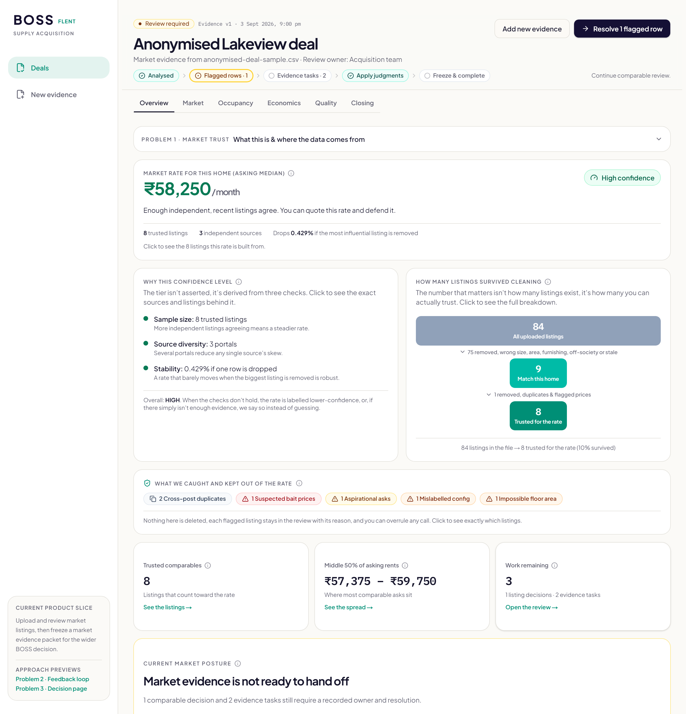
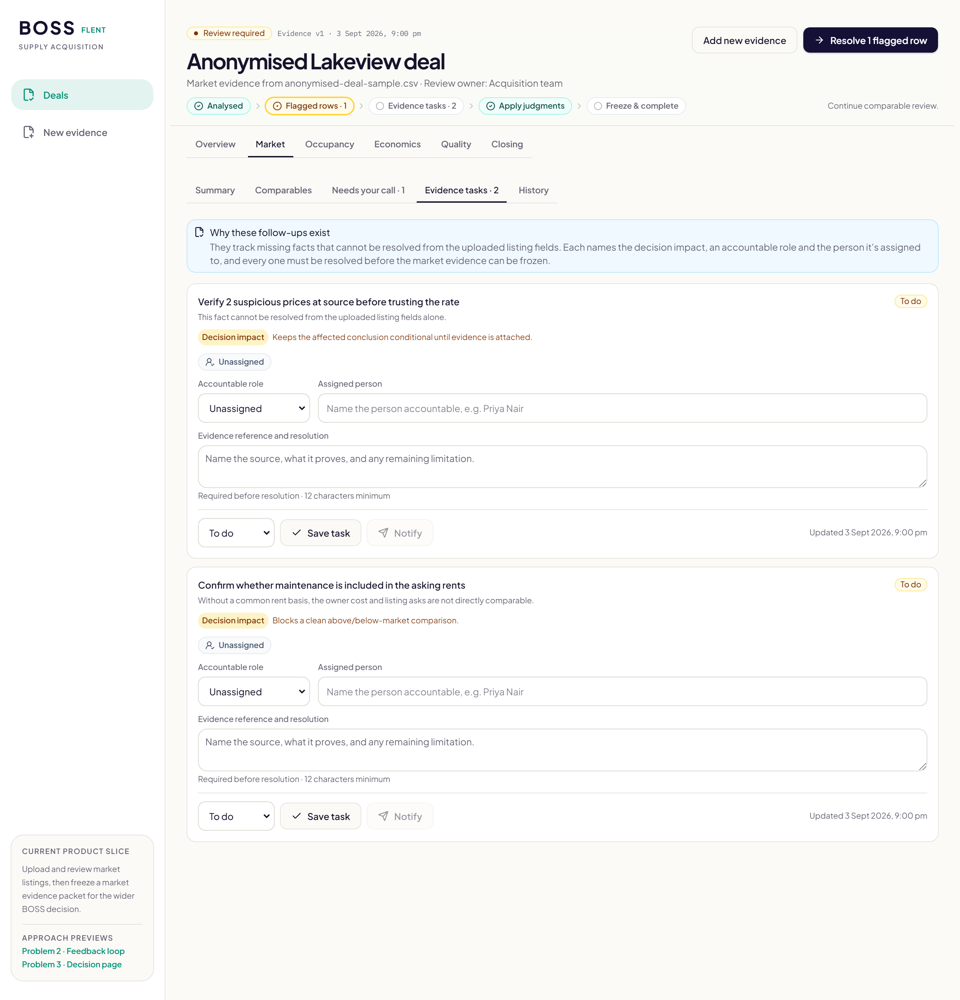
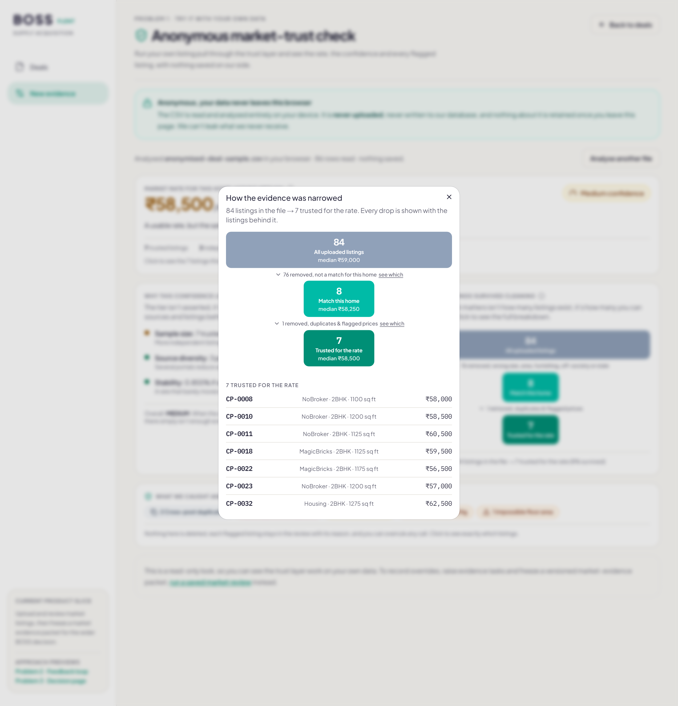
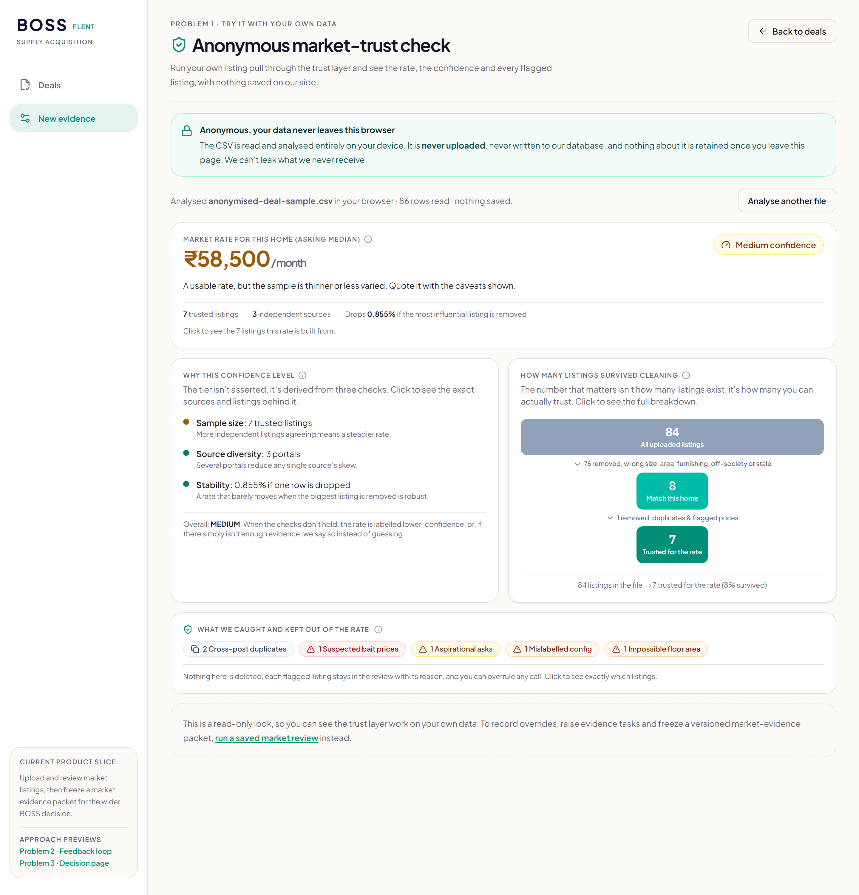
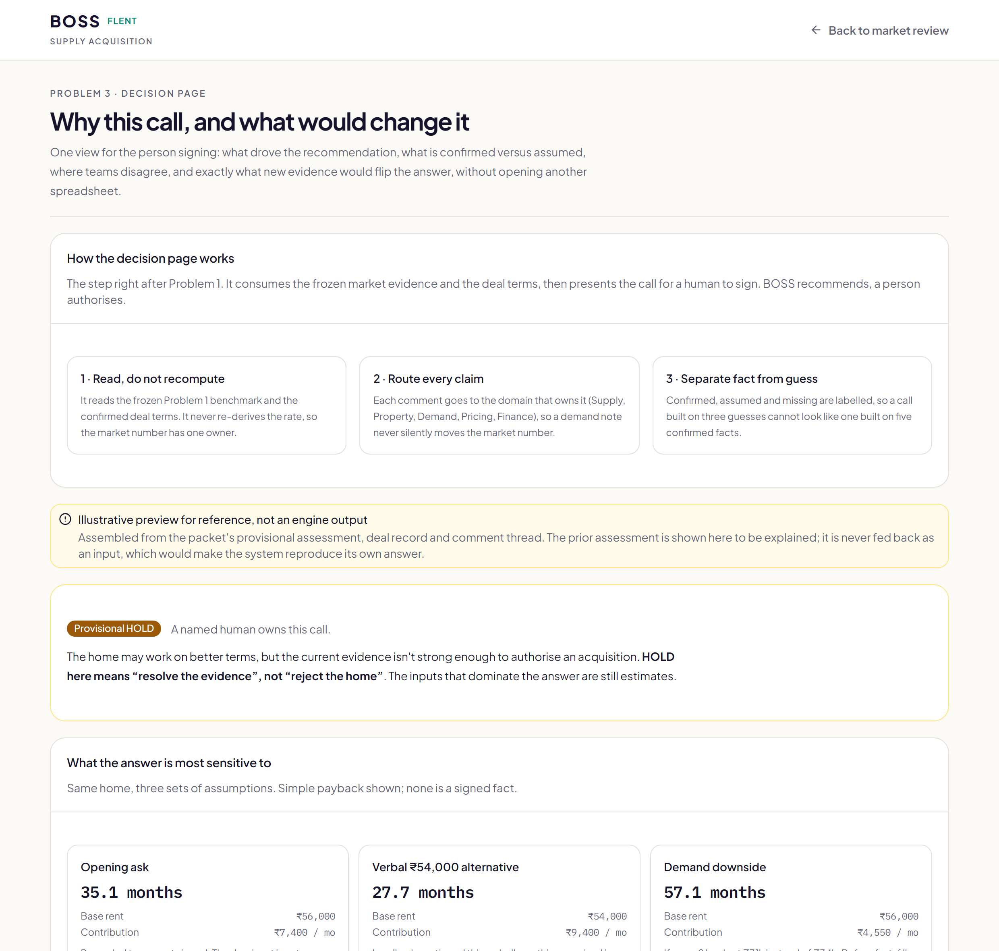
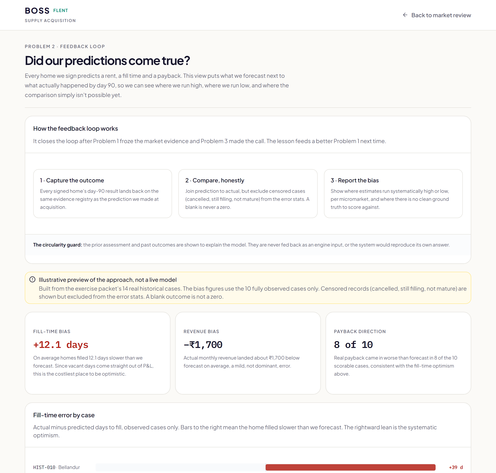

Scraped rental listings are full of duplicates, stale inventory, bait and optimistic asks. Yet a bad median rent looks exactly as precise on a dashboard as a good one. We turn a noisy listing pull into a market rate you can defend, with an explicit confidence level, where every keep-or-drop decision is visible with its reason and a human can overrule any single call.
Flent carries the vacancy risk on every home it signs. The rate we anchor to is a median of nearby listings, and that median is quietly built on evidence that often is not true. The maths is easy. Knowing which rows to believe is the hard part.
The Supply and Acquisition reviewer who signs a multi-year lease, and the P&L behind them. At a sample of four, one bad listing moves the estimate by thousands of rupees.
The failure is invisible. The dashboard shows the same clean figure whether the sample was trustworthy or not, so a confident number built on bad evidence is worse than an honest blank.

The design decision the whole system rests on: capture is not calculate. Photos, comments, outcomes and deal terms are all preserved with their source, but only the listing CSV is ever allowed to move the market median. That is how opinions never quietly become numbers.
Collaboration here is concrete, not a slogan. An evidence gap becomes a task with an accountable role, a named person, and a notification, and the review cannot be frozen until those tasks are resolved. Market Ops, Pricing, Property and Acquisition each own the items only they can answer, and the history records who did what.

Feed a deliberately thin or contradictory pull and the tier returns INSUFFICIENT. The honest answer is “we cannot say yet”, not a manufactured number.
A blank stays blank and is shown as unknown. We never score a missing value as 0 to keep a formula running.
A reviewer can re-include or exclude any row, and conflicting calls stay visible in the audit trail rather than cancelling out.
Inventing evidence. No synthetic row poses as real. If it is not in the packet, it is a labelled assumption.

We want you to point the trust layer at your own pull and watch it work. In anonymous mode the CSV is read and analysed entirely in your browser. It is never uploaded, it is never written to our database, and nothing about it is kept once you leave the page. We cannot leak what we never receive.

Share of runs a reviewer accepts without override, a proxy for trust, tracked next to the median shift caused by overrides. If reviewers constantly overturn the engine, the rules are wrong, not the reviewers.
A smaller, defensible sample over a larger, impressive-looking one. Four trustworthy comps beat thirty noisy ones, and where nothing qualifies, we say so.
AI scaffolded the modules and the UI, ran an adversarial code-review pass on each change, and pressure-tested the framing, always asking “is this capturing or calculating?”. Judgment stayed human on the boundaries.
The frozen market-evidence packet is the object everything else consumes. The decision reads it, the outcome tests it, and the loop makes the next estimate better. Neither Problem 2 nor Problem 3 is allowed to recompute the rate.
One evidence registry with hash, source, actor and time. Outcomes and prior assessments are just more artifact kinds on the same spine.
Supply owns market evidence, Acquisition owns the call, Finance and Pricing own economics, Property owns condition. Each hand-off is explicit.
The prior assessment and past outcomes are shown to explain, never fed back as an engine input, or the system would reproduce its own answer.
One view for the person signing, so they never open another spreadsheet. It reads the frozen benchmark and the deal terms and never recomputes them.
Built as a preview from the real packet at /decision.
Puts what we forecast next to what actually happened by day 90, so we can see where we run high and where we run low, per micromarket.
Built as a preview on the packet’s 14 real cases at /calibration.

